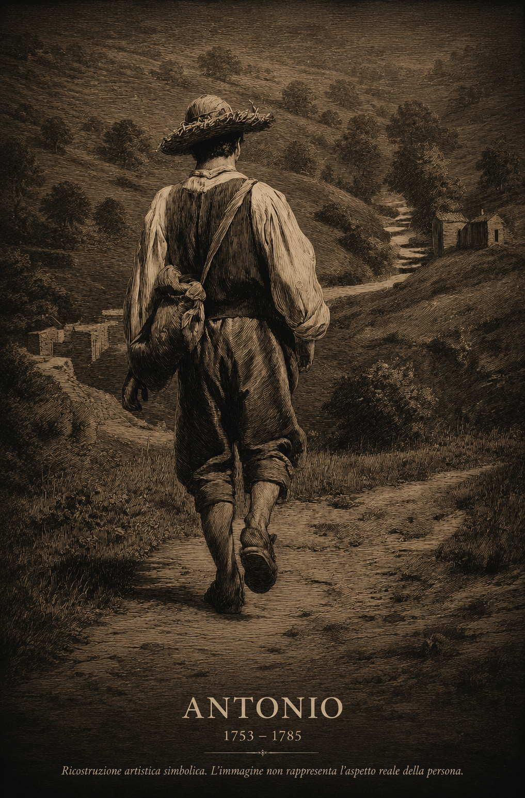

Ricostruzione artistica simbolica. L'immagine non rappresenta l'aspetto reale della persona.
Dati principali
| Nome | Antonio Giuseppe Angelo Cardiello |
|---|---|
| Nascita | 11 novembre 1753 |
| Luogo di nascita | Casale San Pietro |
| Morte | 24 marzo 1785 |
| Luogo di morte | Casale San Pietro |
| Padre | Domenico Nicola Cardiello |
| Madre | Rosa Bracco |
| Professione | Non documentata |
| Coniuge | Rachele De Como |
| Matrimonio | 21 ottobre 1776 |
| Luogo del matrimonio | Chiesa Madre di Casale San Pietro |
| Figli documentati | 2 |
| Linea esposta | prosegue attraverso Domenico Giuseppe Cardiello |
Biografia
Antonio Giuseppe Angelo Cardiello nacque l'11 novembre 1753 a Casale San Pietro da Domenico Nicola Cardiello e Rosa Bracco.
Il 21 ottobre 1776 sposò nella Chiesa Madre di Casale San Pietro Rachele De Como, figlia di Giuseppe De Como e Giustina Leopardo.
Morì il 24 marzo 1785 a circa trentuno anni, lasciando due figli maschi documentati. Attraverso il primogenito Domenico Giuseppe, la linea paterna prosegue fino ai giorni nostri.
Coniuge
Rachele De Como
| Nascita | 5 maggio 1761 |
|---|---|
| Morte | non documentata |
| Padre | Giuseppe De Como |
| Madre | Giustina Leopardo |
Figli documentati
| Nome | Data |
|---|---|
| Domenico Giuseppe | 1779–1822 |
| Pasquale Nicola | 1781–? |
Professione e condizione sociale
La professione di Antonio Giuseppe Angelo Cardiello non è documentata nelle fonti attualmente consultate.
Luoghi
La vita documentata di Antonio Giuseppe Angelo Cardiello si svolse interamente a Casale San Pietro. Qui nacque, si sposò e morì.
Il matrimonio con Rachele De Como fu celebrato nella Chiesa Madre di Casale San Pietro.
Fonti
- Registro dei battesimi
- Registro dei matrimoni
- Registro dei morti
Note genealogiche
Antonio Giuseppe Angelo rappresenta l'ultima generazione della linea paterna completamente radicata a Casale San Pietro. Dopo la sua morte prematura, il figlio Domenico Giuseppe si trasferirà a Eboli, dando origine al ramo familiare che da oltre due secoli vive nella Piana del Sele.
Documenti e approfondimenti
Sezione in aggiornamento. In futuro saranno inserite immagini degli atti originali e ulteriori note archivistiche.